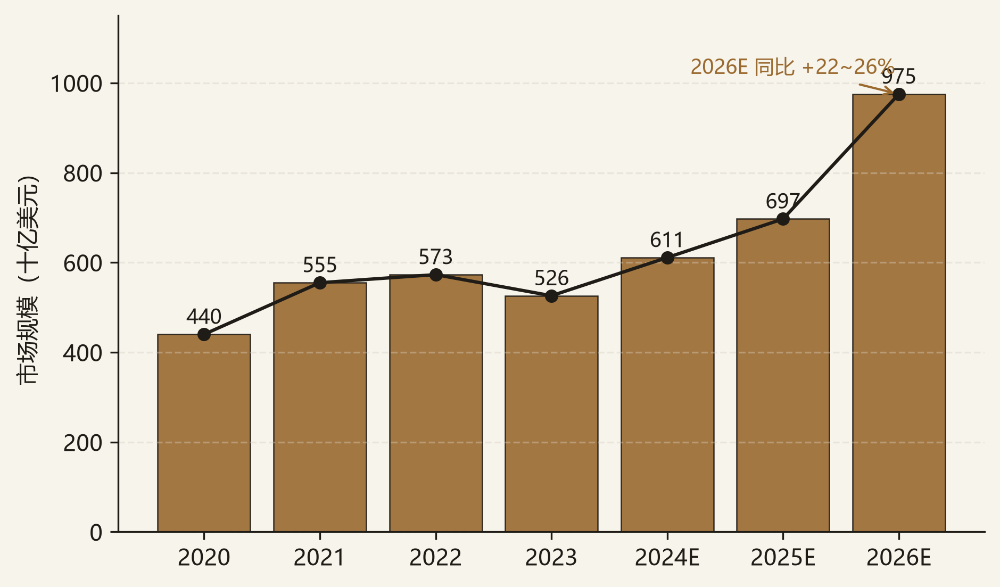
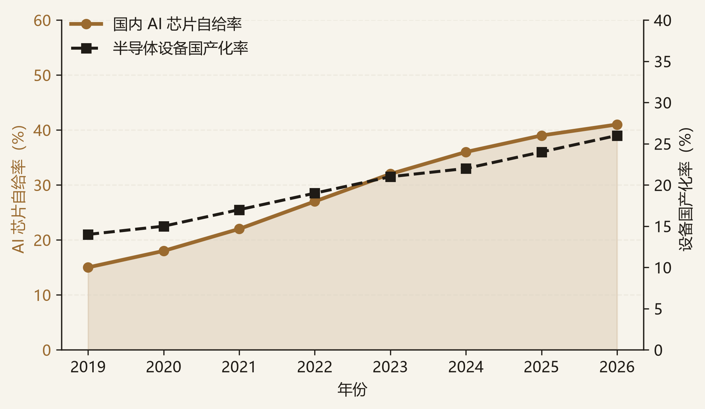
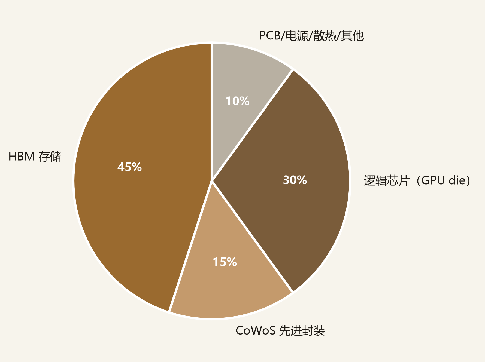

AI 算力芯片是人工智能基础设施的“电力系统”。在地缘摩擦背景下，半导体国产替代已从“可选项”变为“必选项”。据 WSTS 2026 年 6 月预测，全球半导体市场规模将在 2026 年达到约 9,750 亿美元，同比增长 22%–26%，其中 AI 算力相关需求是核心拉动。国内市场方面，据 ICDIA 统计，2026 年国内 AI 芯片自给率约为 41%，仍有近 60% 的替代空间；半导体设备国产化率从 2019 年的 14% 提升至 2025 年的 24%，年均提升约 1.7 个百分点，按此斜率充分国产化仍需约 15 年。
本备忘录聚焦三类投资机会：
核心风险：一级/二级市场估值倒挂、BIS 出口管制升级、CUDA 生态壁垒、先进制程瓶颈。
本备忘录所讨论的“AI 算力芯片”指面向数据中心训练/推理、边缘侧大模型部署的高性能计算芯片，包括 GPU、ASIC、NPU 及配套互连/内存方案。覆盖范围包括：
边界：区别于纯软件 AI 与互联网应用层，本备忘录聚焦「硬科技底座」（设计—制造—设备材料—封装内存），是买方最看重的国家安全级赛道。
全球半导体市场在 2023 年触底后强劲反弹。WSTS 2026 年 6 月预测显示，2026 年全球半导体销售额将达到约 9,750 亿美元，较 2025 年的约 6,970 亿美元增长 22%–26%。本轮增长的核心驱动力是 AI 算力资本开支：云厂商（微软、谷歌、亚马逊、Meta）及国内互联网大厂持续加码 AI 训练/推理集群，推动高端 GPU、HBM、先进封装需求。

国内 AI 算力芯片自给率仍低。据 ICDIA，2026 年国内 AI 芯片自给率约 41%，意味着约 59% 的市场仍由 Nvidia、AMD 等海外厂商占据。半导体设备端国产化率提升更慢：从 2019 年的 14% 提升至 2025 年的 24%，年均仅提升约 1.7 个百分点。光刻（EUV）仍为空白，刻蚀、沉积、量测等环节部分实现国产替代。

以 Nvidia H100/B200 级训练卡为参考，HBM 存储占 BOM 成本约 40%–50%，CoWoS 先进封装约占 15%，逻辑芯片（GPU die）约占 30%，其余为 PCB、电源、散热等。HBM 目前由 SK 海力士、三星、美光寡头垄断，CoWoS 产能由台积电主导。国产 HBM（长鑫存储等在研）与先进封装能力是国内算力卡规模化量产的关键瓶颈。

| 环节 | 海外龙头 | 国产代表 | 价值特征 |
|---|---|---|---|
| 芯片设计 | Nvidia、AMD、Broadcom | 寒武纪、燧原、摩尔线程、沐曦、壁仞、昇腾 | 毛利率最高（60%+），但生态壁垒深 |
| 晶圆代工 | TSMC（N3/N5） | SMIC（N+2≈7nm） | 资本密集、技术密集；无 EUV 限制先进节点 |
| 设备 | ASML、AMAT、Lam、KLA | 北方华创、中微、拓荆、芯源微 | 寡头垄断，国产替代空间最大但周期最长 |
| 材料 | 信越、陶氏、JSR | 沪硅产业、南大光电、安集科技 | 品类多、认证周期长、客户粘性强 |
| HBM | SK 海力士、三星、美光 | 长鑫存储（在研） | 占 BOM 40–50%，供给高度集中 |
| 先进封装 | TSMC CoWoS、Amkor | 长电科技、通富微电 | 资本密集、产能扩张快于 HBM |
价值分布结论：短期内国产 AI 芯片设计弹性最大；中长期看，设备/材料/封装/HBM 是“卡脖子”环节，政策与资本持续倾斜，具备更强的确定性。
国产 GPU/ASIC 是替代 Nvidia 的最直接标的。2026 年“国产 GPU 四小龙”（燧原、摩尔线程、沐曦、壁仞）集中冲刺 IPO，寒武纪作为 A 股稀缺算力芯片龙头持续享受估值溢价。投资看点在于：大模型训练/推理需求放量、互联网/运营商/地方政府智算中心订单、国产替代政策倾斜。
设备材料是国产替代的“慢变量”。尽管光刻（EUV）仍处空白，刻蚀、薄膜沉积、清洗、量测等环节已出现可对标海外的国产龙头。北方华创、中微公司、拓荆科技等受益于国内晶圆厂扩产及国产设备采购比例提升，订单能见度优于设计端。
先进封装是国内算力卡绕开先进制程瓶颈的关键路径。Chiplet/2.5D 封装可将多颗成熟制程 die 集成，实现接近先进制程的性能。长电科技、通富微电在 CoWoS-like 产能上布局较早，是国内算力卡出货的直接受益者。HBM 国产替代尚处早期，但战略价值最高。
| 标的 | 主线 | 核心逻辑 | 主要股东/战投 | 利好 | 利空·风险 | 状态 |
|---|---|---|---|---|---|---|
| 寒武纪 | A | 国产 AI 芯片 A 股龙头，思元系列覆盖训练/推理 | 中科院背景、国家大基金、多只公募 | 稀缺性、政策订单、云边端全栈 | 估值极高、持续亏损、生态弱于 Nvidia | 关注 |
| 燧原科技 | A | 腾讯既是大股东又是核心客户，云燧训练/推理卡已规模化商用 | 腾讯、中信产业基金、上海国投 | 客户验证、股东资源、IPO 已注册 | 单一大客户依赖、盈利周期长 | 首选 |
| 摩尔线程 | A | 全功能 GPU 路线，图形+AI 通用，2026 年科创板 IPO | 深创投、红杉中国、腾讯、字节 | 通用 GPU 叙事、互联网股东背书 | 图形与 AI 兼顾导致资源分散、CUDA 兼容投入大 | 关注 |
| 沐曦 | A | 专注 AI 推理，异构计算架构 | 国调基金、经纬中国、和利资本 | 推理市场放量、团队海思背景 | 品牌与生态建设滞后 | 关注 |
| 壁仞 | A | 大算力训练卡，BR100 系列 | 高瓴、IDG、启明、华登国际 | 单卡算力国内领先 | 高管变动、IPO 节奏、生态薄弱 | 观察 |
| 北方华创 | B | 平台型设备龙头，覆盖刻蚀、薄膜沉积、清洗等多品类 | 大基金、国家队、公募重仓 | 订单饱满、品类扩张、国产替代确定性强 | 估值已反映较多预期、周期属性 | 首选 |
| 中微公司 | B | 刻蚀设备龙头，5nm 以下已有突破 | 大基金、国投创业 | 技术壁垒高、导入先进产线 | 海外收入占比较高、地缘政治敏感 | 关注 |
| 长电科技 | C | 国内封测龙头，CoWoS-like 产能布局领先 | 中芯国际、大基金 | 先进封装放量、业绩弹性大 | 资本开支高、毛利率低于设计 | 关注 |
“首选”指当前阶段赔率与确定性相对占优的标的，不构成投资建议。所有估值与财务数据须以最新招股书、Wind 及公司公告为准。
以 2026 年国内 AI 算力芯片市场约 1,500 亿元人民币估算（IDC 口径），当前自给率 41% 对应国产规模约 615 亿元；若 2030 年自给率提升至 70%，对应国产市场规模约 1,750 亿元，四年复合增速约 30%。设备端：国内晶圆厂 2024–2027 年资本开支维持高位，若国产设备采购占比从当前的 20%–25% 提升至 35%，头部设备厂订单有望保持 20%+ 增长。
| 指标 | 2026E | 2030E | 复合增速 | 测算依据 |
|---|---|---|---|---|
| 国内 AI 算力芯片市场规模 | ~1,500 亿元 | ~2,500 亿元 | ~13% | IDC、ICDIA |
| 国产 AI 芯片自给率 | 41% | 70% | / | 政策目标+产业进展 |
| 国产 AI 芯片市场规模 | ~615 亿元 | ~1,750 亿元 | ~30% | 自给率×市场规模 |
| 半导体设备国产化率 | 24% | 35% | / | SEMI、券商调研 |
假设 2026 年全球 AI 训练卡出货量约 450 万张，单卡搭载 6–8 颗 HBM，全球 HBM 需求约 3,000–3,600 万颗。当前 HBM 产能由 SK 海力士、三星、美光寡头垄断，产能扩张周期约 18–24 个月。国产 HBM 若能在 2027 年底实现小批量出货，将直接受益于供给缺口。
本赛道标的估值分化显著：设计端因稀缺性享受高 PS 倍数，设备/材料/封装端估值相对务实。以下倍数为基于公开信息的示意框架，原因有三：其一，多数国产 AI 芯片设计企业仍处于一级市场或刚进入二级市场，无连续公开交易价格，last round 估值高度依赖融资窗口与条款，不能简单等同于当前公允价值；其二，半导体行业周期性极强，盈利预测对资本开支、订单节奏、地缘政治极为敏感，静态 PS/PE 易被快速重估；其三，海外可比公司（Nvidia、AMD、AMAT 等）的估值本身已包含全球流动性、AI 资本开支预期与地缘溢价，直接对标只能给出区间而非精确值。正式估值须以最新招股书、Wind 实时行情及 DCF/SOTP/可比公司法交叉校准。
| 细分领域 | 代表标的 | 估值方法 | 2026E PS / PE | 海外可比 | 估值判断 |
|---|---|---|---|---|---|
| AI 芯片设计 | 寒武纪 | PS + 稀缺性溢价 | PS 60–100× | Nvidia PS 30–40× | 显著溢价，需订单持续验证 |
| AI 芯片设计 | 燧原（拟 IPO） | PS + last round | PS 20–40× | AMD PS 8–12× | 一二级倒挂风险中等 |
| 半导体设备 | 北方华创 | PE + PEG | PE 35–50× | AMAT PE 20–25× | 国产替代溢价合理 |
| 半导体设备 | 中微公司 | PS + PE | PS 10–15× | Lam Research PS 4–6× | 溢价来自技术突破 |
| 先进封装 | 长电科技 | PE + PB | PE 25–35× | 日月光 PE 12–15× | 先进封装放量可消化估值 |
估值结论：AI 芯片设计端估值已反映较多乐观预期，短期对订单/业绩验证敏感；设备与先进封装估值相对合理，业绩确定性更高，可作为组合的“压舱石”。
| 情景 | 概率 | 关键触发 | 估值影响 |
|---|---|---|---|
| Bull | 20% | 国产大模型能力超预期、互联网大厂加大国产算力采购、HBM 国产突破 | 设计端估值继续扩张，设备/封装订单加速 |
| Base | 55% | 国产替代稳步推进，BIS 管制维持现状，头部标的陆续 IPO | 行业保持 20–30% 复合增长，估值中枢震荡 |
| Bear | 25% | BIS 升级管制（HBM/封装/EDA 新限制）、先进制程突破受阻、AI 资本开支退潮 | 高估值设计标的大幅回调，设备端相对抗跌 |
| 环节 | 海外垄断方 | 国产对标 | 差距口径 |
|---|---|---|---|
| 训练 GPU | Nvidia（H100/H200/B200/GB200）、AMD MI300X | 寒武纪、昇腾、燧原、摩尔线程、沐曦、壁仞 | 单卡算力接近，软件生态（CUDA）代差 5–10 年；互联（NVLink vs 自研）落后 |
| 代工 | TSMC（N3/N5） | SMIC（N+2 ≈ 7nm） | 无 EUV，先进节点停在 7nm 级，良率与产能受限 |
| HBM | SK 海力士、三星（HBM3E/4） | 长鑫（在研） | HBM 占 AI 卡 BOM 40–50%，供给高度集中且受美盟约束 |
| 设备 | ASML（EUV）、AMAT、Lam、KLA | 北方华创、中微、拓荆 | 光刻（尤 EUV）空白；刻蚀 / 沉积部分国产替代 |
| EDA | Synopsys、Cadence、Siemens | 华大九天等 | 先进节点全流程工具链缺口大 |
AI 算力芯片与半导体国产化是“高确定性、高波动”的赛道。短期看，国产 AI 芯片设计因稀缺性享受高估值，但对订单与地缘政治高度敏感；中长期看，设备、材料、先进封装/HBM 的国产替代路径更清晰，业绩兑现更稳定。
建议研究优先级与项目跟投策略（一级市场股权投资视角）：
下一步跟踪：国产大模型能力演进、互联网/运营商国产算力招标、BIS 规则修订、头部标的 IPO 定价与破发情况。
| 数据/观点 | 来源 |
|---|---|
| 全球半导体市场规模及预测 | WSTS（World Semiconductor Trade Statistics），2026 年 6 月 |
| 国内 AI 芯片自给率 | ICDIA（中国半导体行业协会集成电路设计分会），2026 |
| 半导体设备国产化率 | SEMI、券商调研，2019–2025 |
| AI 训练卡 BOM 成本结构 | 行业拆解、公司招股书、券商研报 |
| 国产 GPU 四小龙 IPO 进展 | 上交所/深交所公告、招股书、IT 桔子 |
| 估值倍数 | Wind、Bloomberg、公司财报，截至 2026.07 |
本备忘录为学习/研究用途的框架性文件，所有数据均来自公开资料整理，不构成任何投资建议。估值倍数、市场规模为示意口径，正式分析须以实时数据及原始来源核实。